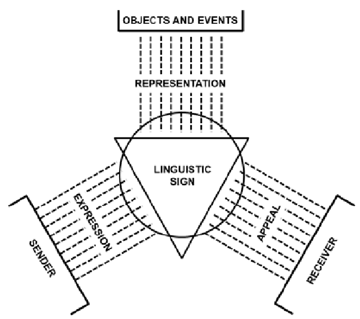
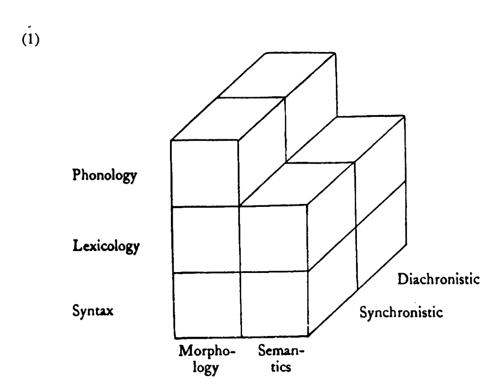

01 Organisation and Introduction
Organisation
Course materials
Website: https://wuqui.github.io/Lex251/
Registration
Open issues?
Is anyone taking this course as part of a Modulprüfung?
Course description
- This course provides an in-depth exploration of English lexicology and lexicography, examining key areas including
- word-formation processes,
- semantic analysis of word senses,
- and patterns of lexical variation and change.
- Grounded in authentic language data from dictionaries and corpora, students will develop analytical skills for studying lexical usage
- through dictionaries like Wiktionary and the Oxford English Dictionary (OED),
- alongside corpora such as COCA and English Trends on the corpus platforms english-corpora.org and Sketch Engine.
- The programme emphasises practical experience in frequency analysis, collocation studies, Word Sketches through collaborative group projects, enabling students to apply corpus-based methodologies to lexicological research projects.
Schedule
Requirements
Assessment formats vary based on ECTS credits:
- 3 ECTS: short paper (≈ 3–5 pages)
- 6 ECTS: long paper (≈ 10–12 pages)
- 9 ECTS: 30–37 characters (MA WP 14.1, WP 15.1)
- project report: 4500 chars
Check your Studien-/Prüfungsordnung for the exact specification.
Introduction
Introduction to Lexicology and Lexicography
What is Lexicology about?
What is a word?
How many words?
Consider this example:
Paul was drinking beer in his favourite bar. He enjoyed having a drink every now and then. He thought he did not drink much, but his wife thought that he drank.
→ 31 running words/tokens
How many words are there?
| type | token | |
|---|---|---|
| 1 | DRINK \(^v\) | drinking |
| drink | ||
| drunk | ||
| 2 | DRINK \(^n\) | drink |
- tokens: he\(^1\), he\(^2\), etc.
- word forms: drinking, drank are word forms of the lexeme DRINK\(^v\)
- types/lexemes: e.g. DRINK\(^v\)
Other terms – e.g. disclaimers
Model of the linguistic sign (Saussure 1916)
There are three notions of words:
- types / lexemes:
- lexical items as listed in the dictionary,
- abstract units of the lexicon: WORK \(^v\)
- word-forms:
- inflectional variants of lexemes
- e.g. (he) works, (he) worked
- tokens:
- concrete instantiations of types in running text,
- commonly delimited by whitespace

Types of signs (Keller 1994)
- indices: relation of naturalness
- icons: relation of similarity
- symbols: relation of arbitrariness
Function of words in communication
Organon model (Bühler 1934):

Objective of Lexicology
- “What is most important, however, is that in lexicology the stock of words or lexical items is not simply regarded as a list of isolated elements.
- Lexicologists try to find out generalisations and regularities and especially consider relations between elements.
- Lexicology is therefore concerned with structures, not with a mere agglomeration of words (cf. Jackson (1988), p. 222).”
(Lipka 1992, 1)
What is the lexicon?
Two senses of lexicon
“In the following, I will use lexicon in two senses that are not always sharply distinguished:
- for a metalinguistic level, or a sub-component in a linguistic model (basically compatible with a variety of theories of language); and
- in the sense of vocabulary as seen from a systematic, synchronic point of view.”
(Lipka 1992, 11)
Dimensions of structure in the lexicon
internal vs external:

paradigmatic vs syntagmatic:

Function of Lexicology in language

Practice: using dictionaries for studying lexis
Which types of lexical information can you find in the OED?
- phonology
- word-formation
- semantics
- sociolinguistics
- register
- usage frequency
For next week …
Read the first chapter of: